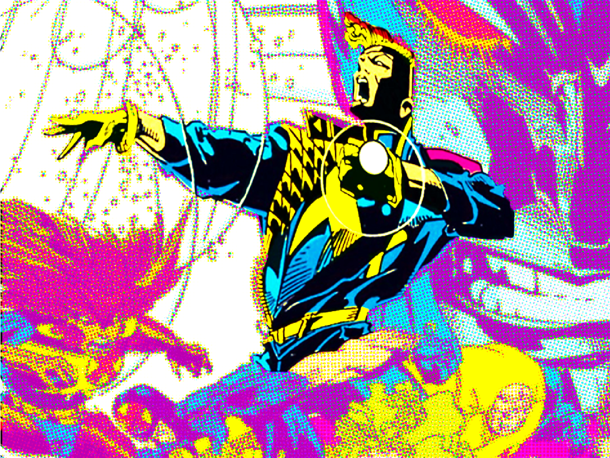
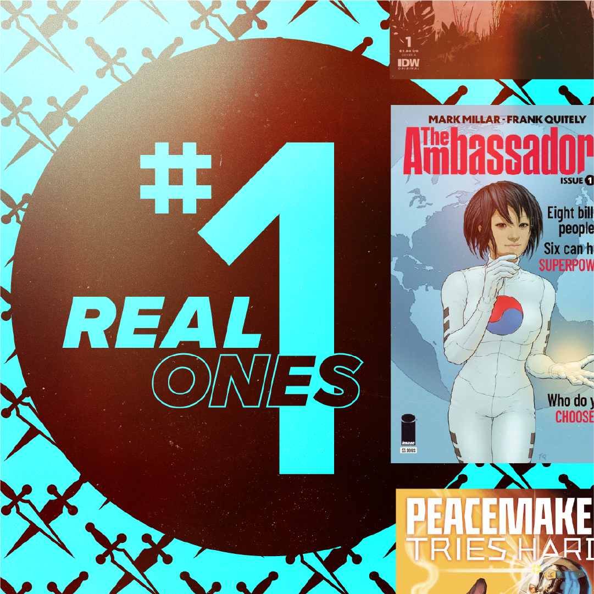

Dimes Branding

PROBLEM: Great writing. No presence. Needed to feel current and sharp.
SOLUTION: Built a bold editorial brand that gave the work a voice before you even read it.
ROLE: Creative Director


How We Did It
Defined the tone early
Sharp, editorial, and a little irreverent. Not trying to feel like a big media company.
Built for a small, fast team
Created a system that worked for a remote group on a tight timeline.
Kept it intentional
Focused on clarity and voice over polish or scale.


Impact
Gave a seasonal project a clear, recognizable identity
Helped contributors show up with consistency and confidence
Proved a lightweight brand system can still feel sharp
